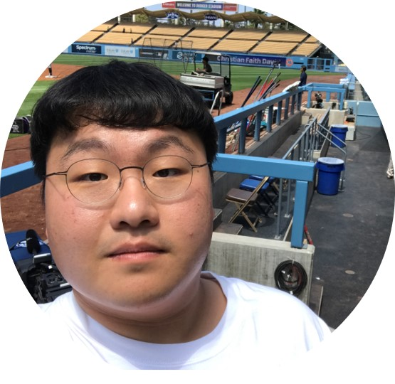

Seungyub HanI am a PhD student at the Communications and Machine Learning Laboratory, part of the Department of Electrical and Computer Engineering at Seoul National University, where I work on Reinforcement Learning, Robotics, and Deep Learning. My PhD advisor is Jungwoo Lee. I have a BS in EE from Seoul National University. E-mail: seungyubhan@snu.ac.kr GitHub / Google Scholar / LinkedIn / CV |
 |
PublicationsI'm interested in reinforcment learning, robot learning, optimization, and representation learning. |

|
Policy-labeled Preference Learning: Is Preference Enough for RLHF?Taehyun Cho, Seokhun Ju, Seungyub Han, Dohyeong Kim, Kyungjae Lee, Jungwoo Lee ICML 2025 (Spotlight) paper / arxiv / We propose Policy-labeled Preference Learning (PPL) within the Direct Preference Optimization (DPO) framework, which resolves these likelihood mismatch problems by modeling human preferences with regret, reflecting the efficiency of executed policies. Experiments in high-dimensional continuous control environments demonstrate PPL’s significant improvements in offline RLHF performance and its effectiveness in online settings. |

|
Bellman Unbiasedness: Toward Provably Efficient Distributional Reinforcement Learning with General Value Function ApproximationTaehyun Cho, Seungyub Han, Seokhun Ju, Dohyeong Kim, Kyungjae Lee, Jungwoo Lee ICML 2025 paper / arxiv / Our theoretical results show that approximating the infinite-dimensional return distribution with a finite number of moment functionals is the only method to learn the statistical information unbiasedly including nonlinear statistical functional. Second, we propose a provably efficient algorithm, SF-LSVI, achieving a regret bound of $\tilde{O}(d_E H^{\frac{3}{2}}\sqrt{K})$. |

|
Spectral-Risk Safe Reinforcement Learning with Convergence GuaranteesDohyeong Kim, Taehyun Cho, Seungyub Han, Hojun Chung, Kyungjae Lee, Songhwai Oh NeurIPS 2024 arxiv / We propose a safe RL algorithm with spectral risk constraints, which shows convergence to an optimum in tabular settings. |

|
D2NAS: Efficient Neural Architecture Search with Performance Improvement and Model Size Reduction for Diverse TasksJungeun Lee, Seungyub Han, Jungwoo Lee IEEE Access paper / We introduce D2NAS, Differential and Diverse NAS, leveraging techniques such as Differentiable ARchiTecture Search (DARTS) and Diverse-task Architecture SearcH (DASH) for architecture discovery. |

|
Pitfall of Optimism: Distributional Reinforcement Learning by Randomizing Risk CriterionTaehyun Cho, Seungyub Han, Heesoo Lee, Kyungjae Lee, Jungwoo Lee NeurIPS 2023 paper / arxiv / We provide a perturbed distributional Bellman optimality operator by distorting the risk measure and prove the convergence and optimality of the proposed method with the weaker contraction property. |

|
SPQR: Controlling Q-ensemble Independence with Spiked Random Model for Reinforcement LearningDohyeok Lee, Seungyub Han, Taehyun Cho, Jungwoo Lee NeurIPS 2023 paper / arxiv / code / By introducing a novel regularization loss for Q-ensemble independence based on random matrix theory, we propose spiked Wishart Q-ensemble independence regularization (SPQR) for reinforcement learning. |

|
On the Convergence of Continual Learning with Adaptive MethodsSeungyub Han, Yeongmo Kim, Taehyun Cho, Jungwoo Lee UAI 2023 paper / arxiv / In this paper, we provide a convergence analysis of memory-based continual learning with stochastic gradient descent and empirical evidence that training current tasks causes the cumulative degradation of previous tasks. |

|
Adaptive Methods for Nonconvex Continual LearningSeungyub Han, Yeongmo Kim, Taehyun Cho, Jungwoo Lee NeurIPS 2022 Optimization for Machine Learning Workshop paper / We propose an adaptive method for nonconvex continual learning (NCCL), which adjusts step sizes of both previous and current tasks with the gradients. |

|
Perturbed Quantile Regression for Distributional Reinforcement LearningTaehyun Cho, Seungyub Han, Heesoo Lee, Kyungjae Lee, Jungwoo Lee NeurIPS 2022 Deep RL Workshop paper / We provide a perturbed distributional Bellman optimality operator by distorting the risk measure in action selection, and prove the convergence and optimality of the proposed method by using the weaker contraction property. |

|
Learning to Learn Unlearned Feature for Brain Tumor SegmentationSeungyub Han, Yeongmo Kim, Seokhyeon Ha, Jungwoo Lee, Seunghong Choi Medical Imaging meets NeurIPS (NeurIPS 2018 Workshop) paper / arxiv / One of the difficulties in medical image segmentation is the lack of datasets with proper annotations. To alleviate this problem, we propose active meta-tune to achieve balanced parameters for both glioma and brain metastasis domains within a few steps. |
Preprints |

|
Generative Adversarial Trainer: Defense to Adversarial Perturbations with GANHyeungill Lee, Seungyub Han, Jungwoo Lee , 2017 arxiv / We propose a novel technique to make neural network robust to adversarial examples using a generative adversarial network. We alternately train both classifier and generator networks. The generator network generates an adversarial perturbation that can easily fool the classifier network by using a gradient of each image. |
Other Activities
|
|
Design and source code from Jon Barron's website |